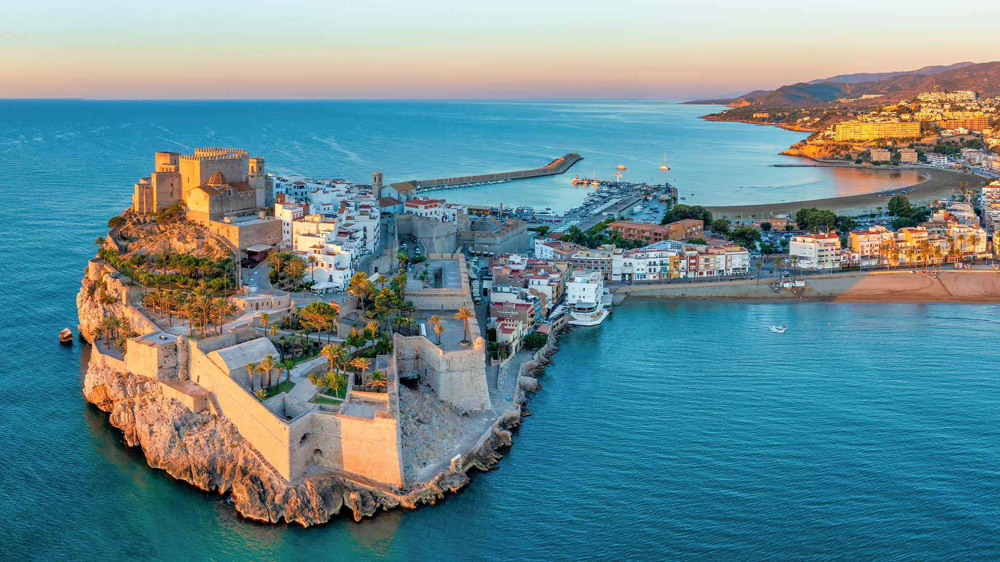
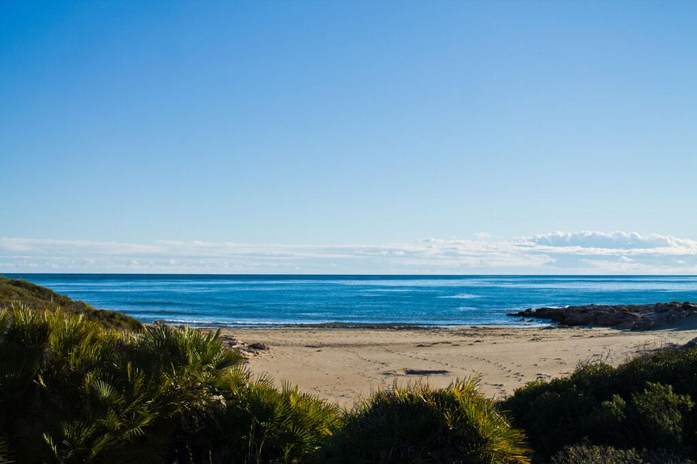
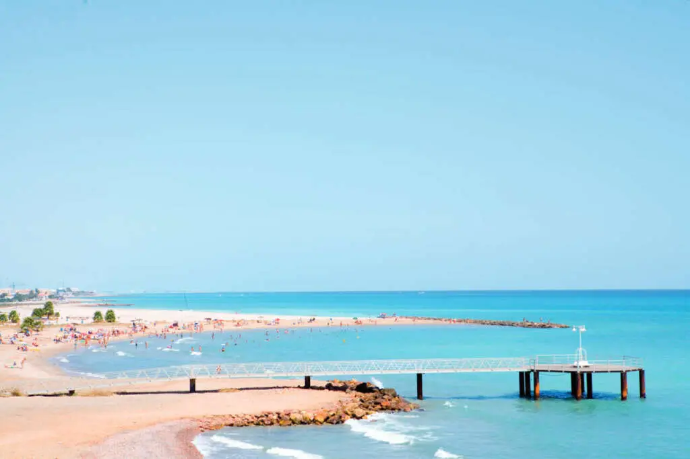
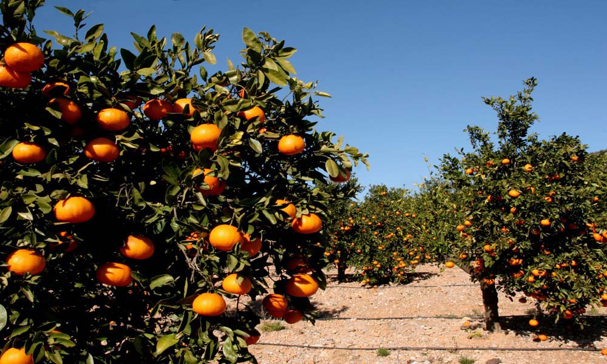

Costa del Azahar
La Costa del mar Balear, en el Mediterraneo, situada en la provincia de Castellon (España), que esta constituida por 120Km aprox de playas y calas. El nombre turistico de Costa del Azahar proviene de la flor del naranjo (Azahar) que a su vez es el cultivo por excelencia de la provincia. Al norte limita con la Costa Dorada y al sur con la Costa de Valencia .

Playas y Calas
Muchas de las playas de la provincia de Castellón cuentan con la Bandera Azul que otorga la Fundación para la Educación Ambiental de Europa a aquellas que se distinguen por la calidad de sus aguas y sus servicios. Además otras de ellas poseen los certificados de calidad “Q” otorgado por el ICTE, el ISO 9001, o el de calidad medioambiental ISO 14001.
Las diferentes playas que componen esta costa varian entre playas urbanas y playas salvajes.
 
- Norte de Peñíscola
- Playa Romana, Alcalà de Xivert-Alcossebre
- Playa Els Terrers, Benicàssim
- El Gurugú, Castelló de la plana
- Calas de Ribamar, Alcalà de Xivert-Alcossebre
- Playa del Pebret, Peñíscola
- Playa del Russo, Peñíscola
- Cala de La Foradada, Vinarós
- Les Cases, Xilxes
- Oropesa la Vella, Oropesa del Mar
-De una longitud aproximada de 5 km y con 44 metros de anchura media y aguas transparentes, playa alejada de la ciudad.
-De unos 500 metros de longitud por 40 de anchura destaca además por su localización, separada de la plataforma peninsular por un terraplén natural
1,7 km de longitud y una anchura de unos 30 metros con arena fina y limpísimas aguas de color turquesa que atrapan la vista.
1 km de longitud y más de 140 metros de anchura y puede recorrerse a través de un paseo ajardinado y un carril bici
El acceso a las calas se realiza por un camino de tierra sin asfaltar y conviene llevar todo lo necesario para pasar el día, ya que las calas no cuentan con servicios.
Al sur de la ciudad, es una de las pocas zonas vírgenes de la costa levantina, con una extensión de 280 metros de longitud y arena fina para plantar la toalla.
Playa del Russo, otro diminuto oasis de paz y belleza salvaje (cuenta con apenas 80 metros de longitud) y arena fina.
Más al norte de Peñíscola, en la localidad de Vinarós, encontramos una preciosa cala que se abre entre acantilados de curiosas formas.
En el municipio de Chilches (Xilxes en valenciano) encontramos la playa de Les Cases, un arenal de 532 metros de longitud y unos 55 de anchura media enmarcado por un área de pinos.
-De unos 120 metros de largo y 50 de ancho, que recibe con arena fina y dorada y se delimita por el cerro Oropesa la Vella, dando lugar a un hermoso paisaje.
Naturaleza
La Costa del Azahar tiene como vegetación natural típica el matorral mediterráneo formado entre otras por:
El palmito (Chamaerops humilis L.) (única palmera endémica de Europa) la coscoja, (Quercus coccifera L.); el lentisco, (Pistacia lentiscus L.) el enebro de la Miera o broja (Juniperus oxycedrus L. var. macrocarpa) la Albaida, (Anthhylis cytisoides L.); el Espino negro (Crataegus Calpodendron) el pino piñonero, el pino carrasco y el hinojo, (Foeniculum vulgare).Actualmente, el desarrollo urbanístico del litoral ha destruido gran parte de esta vegetación endémica, sustituyéndola por cultivos de árboles frutales (principalmente naranjos) y ejemplares ornamentales de palmera datilera.
Llevame al inicio
Geografía
Desde el punto de vista turístico, la costa del Azahar solo comprende la provincia de Castellón, y por tanto, forma parte del turismo de sol y playa de localidades dentro de la misma.
La costa también abarca la Sierra de Irta, el Humedal del Prado de Cabanes-Torreblanca y las zonas del Desierto de las Palmas. En la zona también se encuentra la Reserva Natural de Columbretes
a 56 km de la costa. Dentro de la flora y la vegetación nos podemos encontrar con el matorral mediterráneo, dentro del cual podemos identificar el palmito, la coscoja, el lentisco, el enebro de la Miera
la Albaida, el Espino Negro, el pino Piñeiro, el pino carrasco y el hinojo.

Ocio
La región ofrece una amplia gama de opciones para todos los gustos y edades
- Playas
- Deportes Acuáticos
- Senderismo
- Gastronomía
- Visitas Culturales
- Fiestas y eventos
Disfruta del sol y de las hermosas playas de la Costa de Azahar, como Playa del Grao, Playa de Benicassím, Playa de Castellón, entre otras.
Prueba actividades como paddlesurf, el kitesurf o el busceo en las aguas cristalinas de la costa.
Explora los senderos naturales que serpentean a lo largo de la costa y en el interior, como el Parque Natural del Desierto de las Palmas o el Parque Natural de la Sierra de Irta.
Degusta la deliciosa gastronomía mediterránea en los numerosos restaurantes y bares de la zona, con platos como la paella, el pescado fresco y los mariscos.
Descubre el patrimonio cultural de la región visitando lugares como el Castillo de Peñíscola, el Faro de Oropesa del Mar, o la Ciudad de las Artes y las Ciencias en Valencia, que está a poca distancia en coche.
Las fiestas de la Magdalena en Castellón o el Festival Internacional de Benicàssim (FIB).
Desarrollo ecónomico y social
El desarrollo económico y social de la Costa de Azahar, ha experimentado diversas etapas a lo largo del tiempo.
- Turismo
- Industria y Comercio
- Sector agrícola
- Sostenibilidad y medio ambiente
- Desafios sociales
El turismo ha sido históricamente uno de los motores económicos más importantes de la región. A lo largo de los años, ha habido un crecimiento significativo en la infraestructura turística, incluyendo hoteles, restaurantes, campos de golf y actividades recreativas.
Castellón, la capital provincial, alberga un importante puerto marítimo y zonas industriales que contribuyen significativamente a la economía regional.
A pesar del auge del turismo, la agricultura sigue siendo una parte fundamental de la economía de la Costa de Azahar.
La preservación de los recursos naturales, la protección del litoral y la promoción de prácticas sostenibles en sectores como el turismo y la agricultura son fundamentales para garantizar un desarrollo equilibrado a largo plazo.
El desempleo, especialmente entre los jóvenes, ha sido un problema persistente. Además, existen disparidades socioeconómicas entre áreas urbanas y rurales, así como entre la costa y el interior.